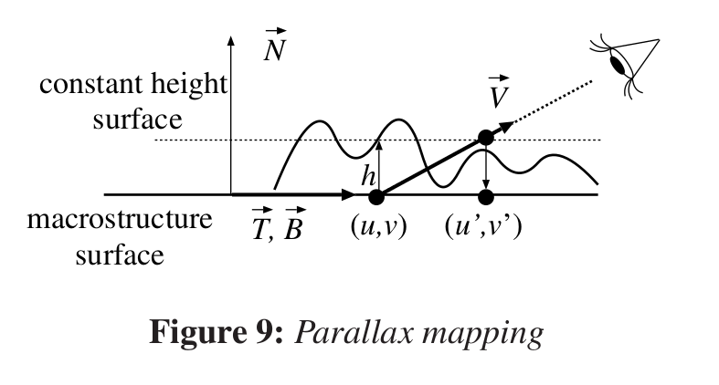
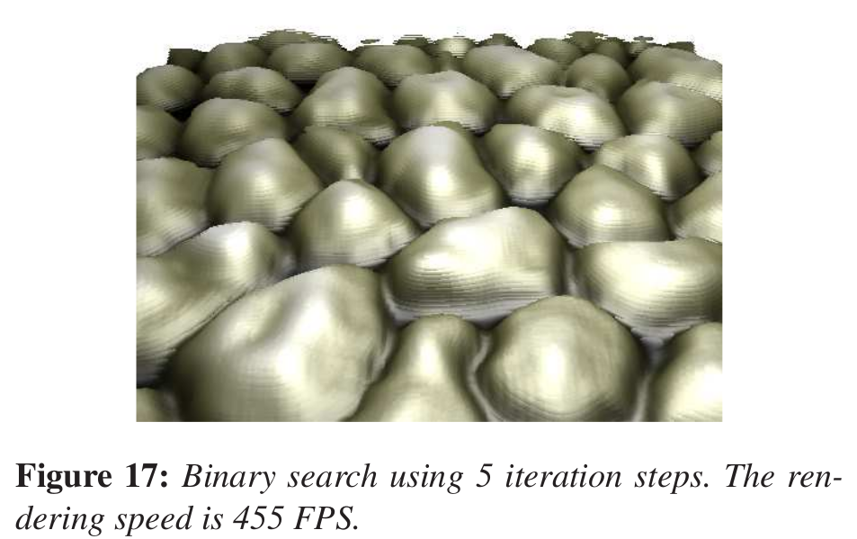

Displacement Mapping
Universidade Federal da Bahia
MATA65 - Computação Gráfica / 2017.1
Adeilson Silva / @adeilsonsilva & Rafael Brasileiro / @rafaelbps89
Aspectos Teóricos
O que é displacement mapping?
Por que falar de displacement mapping?
A motivação para o uso de displacement mapping é reproduzir uma estrutura de maneira detalhada reduzindo o número de vértices utilizados.
Szirmay‐Kalos [1] faz uma revisão sobre as principais técnicas de DM disponíveis na literatura, comparando as técnicas utilizadas e os resultados obtidos pelos autores, apresentando o estado da arte da época.
O que mais é preciso saber?
Macroestrutura
Mesoestrutura
Microestrutura

Equação utilizada para o cálculo da mesoestrutura.
Você conhece a fórmula parametrizada da sua geometria?
E caso você não conheça?
Independente disso, a normal é dada por:
O mapa de altura é armazenado de forma compactada.

Transformação dos valores do mapa de altura para o espaço de valores real.
Displacement Mapping no Vertex Shader
float h = tex2Dlod(hMap, uv).a * SCALE + BIAS;
float3 mPos = Position + Normal * h;
hPos = mul(float4(mPos,1), WorldViewProj);
Existem problemas com essa abordagem:
Um objeto altamente tesselado é necessário.
GPUs possuem mais poder de processamento por fragmento. (Unified Shader Architecture)
GPUs antigas não permitem acessar textura no vertex shader.
Processamento no VS x no FS
Displacement Mapping no Fragment Shader
Existem problemas com essa abordagem:
Necessário realizar busca no mapa de altura.
Múltiplas soluções para a equação anterior.
Pontos do mapa de altura podem ser ignorados por não serem processados pelo FS.
Mudança na profundidade do ponto desenhado.
Métodos não-iterativos x Métodos Iterativos
Métodos Não-iterativos
Parallax mapping
Kaneko T. et. al., "Detailed shape representation with parallax mapping.", ICAT 2001
Métodos Não-iterativos
Bump mapping x Parallax mapping
Métodos Iterativos
Seguros x Inseguros
Métodos Iterativos
Inseguros - Binary Search
Policarpo F., et. al., "Real-time relief mapping on arbitrary polygonal surfaces.", SIGGRAPH 2005
Métodos Iterativos
Inseguros - Binary Search
Métodos Iterativos
"Quasi-safe" - Linear Search

Levoy M., et. al., "Efficient ray tracing of volume data.", ACM TOG, 1990
Métodos Iterativos
"Quasi-safe" - Linear Search
Métodos Combinados
Relief Mapping
Policarpo F., et. al., "Real-time relief mapping on arbitrary polygonal surfaces.", SIGGRAPH 2005
Aspectos Práticos
Como utilizar displacement mapping no Three.js?
Carregando texturas (Mapa de ambiente)
// env map
var path = "textures/cube/SwedishRoyalCastle/";
var format = '.jpg';
var urls = [
path + 'px' + format, path + 'nx' + format,
path + 'py' + format, path + 'ny' + format,
path + 'pz' + format, path + 'nz' + format
];
var reflectionCube = new THREE.CubeTextureLoader().load( urls );
Carregando texturas
// textures
var textureLoader = new THREE.TextureLoader();
var normalMap = textureLoader.load("models/obj/ninja/normal.jpg");
var aoMap = textureLoader.load("models/obj/ninja/ao.jpg");
var displacementMap = textureLoader.load("models/obj/ninja/displacement.jpg");
Inicializando materiais
// material
material = new THREE.MeshStandardMaterial( {
color: 0x888888,
roughness: settings.roughness,
metalness: settings.metalness,
normalMap: normalMap,
normalScale: new THREE.Vector2( 1, - 1 ), // why does the normal map require negation in this case?
aoMap: aoMap,
aoMapIntensity: 1,
displacementMap: displacementMap,
displacementScale: settings.displacementScale,
displacementBias: - 0.428408, // from original model
envMap: reflectionCube,
envMapIntensity: settings.envMapIntensity,
side: THREE.DoubleSide
} );
Carregando objeto com a geometria
// geometry
var loader = new THREE.OBJLoader();
loader.load(
"models/obj/ninja/ninjaHead_Low.obj",
function ( group ) {
var geometry = group.children[ 0 ].geometry;
geometry.attributes.uv2 = geometry.attributes.uv;
geometry.center();
mesh = new THREE.Mesh( geometry, material );
mesh.scale.multiplyScalar( 25 );
scene.add( mesh );
}
);